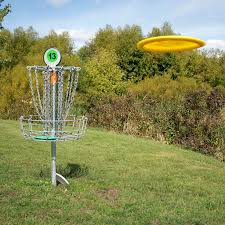
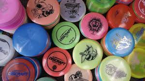

About This Site
Disc Golf Central is built for players of all skill levels who love the sport and want to learn more. Whether you’re looking for your next favorite course in Utah, want to discover the best discs for your throwing style, or need techniques to improve your putting — we’ve got you covered.

Top Utah Courses
Find scenic and challenging disc golf courses across Utah — from the mountains of Solitude to city parks in Salt Lake.
View Courses

Disc Types & Gear
Understand disc flight paths, compare disc types, and get recommendations for drivers, midranges, and putters.
Learn MoreThrowing Techniques
Improve your distance, control, and accuracy with our breakdown of common throwing styles and training tips.
Get Tips